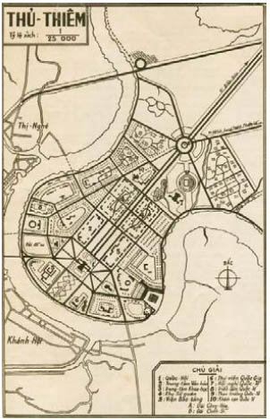

Ngôi nhà của một yêu râu xanh. Đương nhiên rồi. Ít nhất thì bây giờ những lời lảm nhảm của Louis cũng có nghĩa. Trắng như sữa. Chẳng lẽ bấy nhiêu còn chưa đủ rõ sao? Nerron nguyền rủa sự ngu xuẩn của chính mình, khi gã trông thấy những bức tường lá héo úa và con hươu đang đứng lạc lõng trước ngôi nhà tối đen như mực. Nó chạy thoát trước khi bị lũ chó săn tóm được.
Tên yêu râu xanh nằm trong căn Phòng Đỏ của hắn, xung quanh là chín phụ nữ. Họ nằm bên cạnh kẻ sát nhân như thể đang ngủ. Lelou ói mửa trong hành lang. Bao tử của lão Bọ nhạy cảm khi gặp phải xác chết. Nhưng ngay cả Eaumbre cũng bối rối dán mắt vào một hàng những xác chết xinh đẹp, trước khi đi tìm phòng chứa kho báu của tên yêu râu xanh. Ít nhất thì những nam nhân ngư cũng để những thiếu nữ họ bắt sống sót, dù một số nạn nhân thà chọn cái chết còn hơn sống tù ngục cả đời trong ao.
Đen như một mảnh trời đêm lồng trong vàng. Ngươi là một thằng ngu, Nerron. Louis đã nói cho gã biết tất cả những gì gã muốn biết. Dù quả tim được cất giấu ở bất cứ đâu trong cái nơi chốn tối tăm này, Nerron dám đặt cược bằng cả thủ cấp và bàn tay rằng Reckless đã tìm ra nó. Và hắn cũng chắc rằng vết máu dưới tiền sảnh không phải là máu đối thủ của gã.
Trên sân bọn họ tìm thấy những dấu vết bị bôi xóa, nhưng thật không dễ dàng để mai danh ẩn tích khi người ta phải mang theo một người bị thương. Điều đó buộc người ta phải di chuyển chậm lại.
Bọn họ sẽ nhanh chóng bắt kịp nhóm người kia thôi.